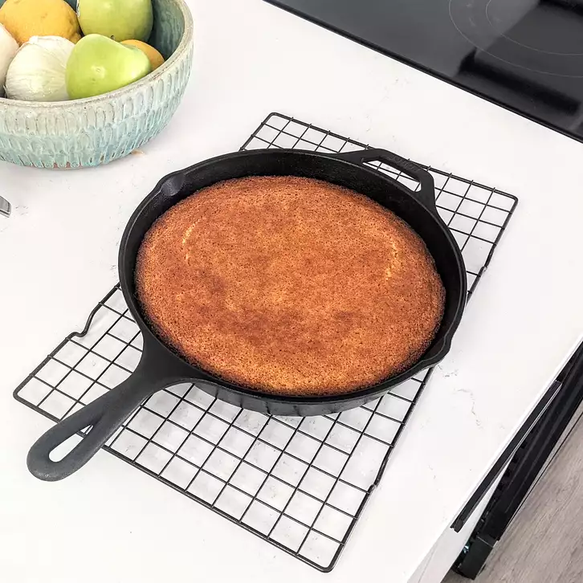

Skillet Corn Bread Recipe

Recipe Description
A simple, slightly sweet corn bread made in the
versatile cast-iron skillet.
Ingredients
- 1 1/4 Cups of milk
- 1 cup of cornmeal
- 1 cup of All Purpose flour
- 4 tespoons of baking powder
- 3/4 teaspoon of Kosher salt
- 2 eggs, beaten
- 1/4 cup unsalted butter, melted
- 1 tablespoon of Vegetable oil
Steps
- Preheat oven to 425 degrees F (220 degrees C). Place
9 inch cast-iron skillet in oven to warm it.
- Mix milk and cornmeal together in a small bowl and
let soak for 10 minutes.
- Sift flour, baking powder, and salt together in a mixing bowl.
Beat cornmeal mixture, eggs and butter into the flour mixture
until you have a smooth batter, about 1 minute.
- Remove skillet from oven. Swish vegetable oil
skillet coat; pour off excess.
- Pour batter into skillet.
- Bake in the preheated oven until a toothpick inserted
into the center comes out clean. Cut in wedges to serve.